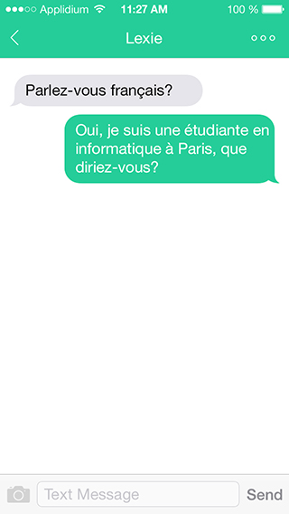
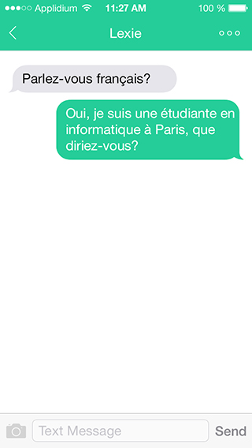

Education
-
MSc in Human Computer Interaction and Design
Double degree at University College London and Université Paris Sud
2012–2014 | London, UK && Paris, France
EIT ICT Labs Master’s Program, Full scholarship awarded, Innovation & Entrepreneurship Minor
Got a distinction in Ergonomics for Design, got the highest marks, 19/20 and 9/10, in practical courseworks in peers
-
BEng in Digital Media Technology
Zhejiang University, top 3 university in China
2008–2012 | Hangzhou, China
GPA: 3.88/4.0 (88.36/100)
Learning Focus: Interactive Media, Product Design, HCI, Game Entertainment, Web 2.0, Animation
Excellent Undergraduate of Zhejiang Province (2012), Excellent Undergraduate Thesis of Zhejiang University (2012), National Scholarship from Ministry of Education of the P.R. China (Highest honor for outstanding undergraduates in China, 2011)
Experience
-
UX Designer Intern
Intel Collaborative Research Institute
June 2014–September 2014 | London, UK
Carried out up-front research, user interviews, design iterations and user studies about air quality and air quality data visualizations.
Proposed a photo-based air quality visual representation to visualise air quality data.
Learned XCode and Swift from zero, designed and implemented an iPhone mobile app in one month to demonstrate my ideas.
-
Research Intern
Aviz, INRIA, the best visualization lab in Europe
May 2013–June 2013 | Paris, France
Worked on casual visualization and explored Spirograph design space, patterns, visual codes, etc.
Developed an application using customized Spirograph patterns to visualize Tweets time sequential data.
-
UX Designer Intern
Douban Inc.
June 2012–August 2012 | Beijing, China
Participated in the UX and UI design of the Douban Movie iPad App
-
UX Designer & Front-end Developer Intern
R&D, Alibaba Cloud Computing Company
March 2011–May 2012 | Hangzhou, China
Leaded in the UX/UI design and front-end development of the Cloud Render Platform
Optimized the process of uploading render jobs, visualized cloud render results and costs
Publication
Ye Lin, Romain Vuillemot. Spirograph Designs for Ambient Display of Tweets. IEEE VIS 2013 Arts Program proceedings. IEEE VIS 2013, Oct 2013, Atlanta, GA, United States. IEEE
Honors
3rd place at the IE Venture Days in June 2014 in London
Raised pre-seed funding and got into the Dotforge Accelerator in Sheffield, UK
Winning Team of AngelHack, Hackathon in London
Best Entrepreneurial Team, at EIT ICT Labs Summer School, Wellbeing Innovation Camp 2013, at Philips, in Eindhoven, Netherlands
Student volunteer, CHI 2013, Paris
Skills
Design: Photoshop, Illustrator, Flash, sketching, wireframing, storyboards, innovative thinking, user study, OmniGraffle, Axure, Maya, Motion Builder, After Effects
Programming: JavaScript, HTML5, CSS3, Swift, AS3.0, Processing, OpenCV, OpenGL, C++, Java, MySQL, Python, PHP
Only listed a few/most recent works of mine in this portfolio. If you are interested to see more. Please drop me an email.
 
